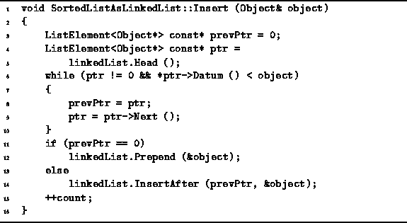

Data Structures and Algorithms
with Object-Oriented Design Patterns in C++
Data Structures and Algorithms
with Object-Oriented Design Patterns in C++
Program  gives the implementation of the Insert
member function of the SortedListAsLinkedList class.
This function takes a single argument:
a reference to an Object to be inserted into the sorted list.
The algorithm used for the insertion is as follows:
First, the existing sorted, linked list is traversed
in order to find the linked list element which is greater than or equal
to the object to be inserted into the list.
The traversal is done using two pointers--prevPtr and ptr.
During the traversal,
the latter keeps track of the current element
and the former keeps track of the previous element.
gives the implementation of the Insert
member function of the SortedListAsLinkedList class.
This function takes a single argument:
a reference to an Object to be inserted into the sorted list.
The algorithm used for the insertion is as follows:
First, the existing sorted, linked list is traversed
in order to find the linked list element which is greater than or equal
to the object to be inserted into the list.
The traversal is done using two pointers--prevPtr and ptr.
During the traversal,
the latter keeps track of the current element
and the former keeps track of the previous element.
By keeping track of the previous element,
it is possible to efficiently insert the new item into the sorted list
by calling the InsertAfter member function of the
LinkedList<T> class.
In Chapter ,
the InsertAfter function was shown to be O(1).
In the event that the item to be inserted is smaller than the first item in the sorted list, then rather than using the InsertAfter function, the Prepend function is used. The Prepend function was also shown to be O(1).
In the worst case, the object to be inserted into the linked list
is larger than all of the objects already present in the list.
In this case, the entire list needs to be traversed
before doing the insertion.
Consequently, the total running time for the Insert
operation of the SortedListAsLinkedList class is O(n),
where  .
.

Program: SortedListAsLinkedList Class Insert Member Function Definition
 Copyright © 1997 by Bruno R. Preiss, P.Eng. All rights reserved.
Copyright © 1997 by Bruno R. Preiss, P.Eng. All rights reserved.